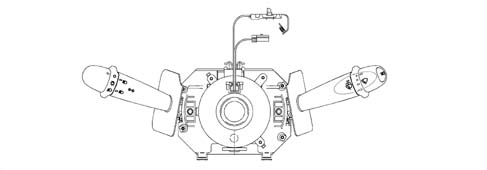
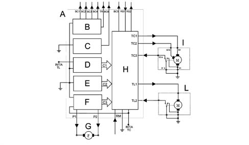
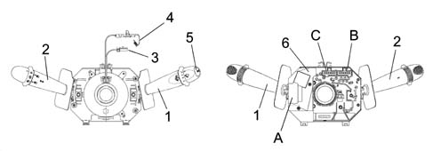
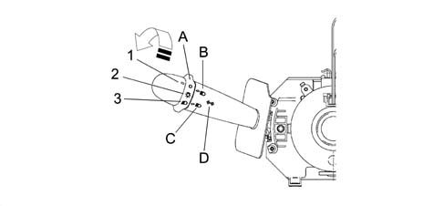
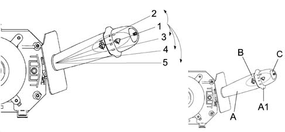
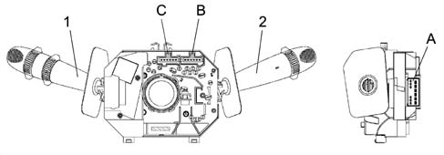
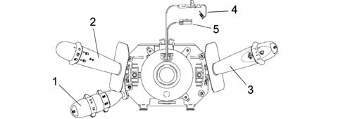

5550A STALK UNIT
- Path
- Descriptions > 55 ELECTRICAL EQUIPMENT > 5550 WARNING AND MANOEUVRING INDICATORS > 5550A STALK UNIT
- Kind
- system description
- Applies to
- all engines; all production periods
- Interactive page
- https://sloeber94.github.io/elrnDB-aGt/en/#/125000409
Applies to: all engines; all production periods
INTRODUCTION
The diagram illustrates the steering column switch unit controls.

SPECIFCATIONS
The diagram illustrates the steering column switch unit controls.

A - Steering column switch unit
B - Lights/direction indicators/trip computer controls
C - Side lights control
D - Rearscreen wiper control (not used)
E - Windscreen wiper controls
F - Pump controls
G - Electric pump
H - Electronic module
I - Windscreen wiper motor
L - Rearscreen wiper motor (not used)
LIGHTS/DIRECTION INDICATORS CONTROLS OUTPUT INTERFACES (BETWEEN STEERING COLUMN SWITCH UNIT AND BODY COMPUTER)
BC1: Left direction control
BC2: Right direction control
BC3: Dipped headlamps control
BC4: Main beam headlamps control
BC6: Side lights control
TR: Trip computer control
WASH/WIPE INPUT CONTROLS INTERFACES
TC3: Windscreen wiper zeroing cam: this cam is a switch fitted on the motor which is normally closed when the wiper is in the rest position (windscreen wiper blades downwards and still).
TL2: Rearscreen wiper zeroing cam (not used) - RM: Reverse gear engaged signal. (not used)
TCI-TC2: windscreen wiper control outputs;
TL1: rearscreen wiper control output (not used)
P1-P2: electric pump control outputs;
BC5: headlamp washer go ahead to Body Computer. The electronic module supplies a positive comman.
RAIN SENSOR INTERFACES
The rain sensor should be supplied when the right lever is in the AUTOMATIC position:
- RS2: Rain sensor supply circuit by output electronic module (wiper functions);
- RS1: Hardware interface between rain sensor and input electronic module.
COMPONENTS AND OPERATION
THE CASING
It is a part of the steering column switch unit containing the electrical circuits and the switching and automatic release mechanisms which return the left lever to the rest position once the steering wheel has been realigned. Attachment angle 80° ± 5° release angle 60° ± 5°.

1 - Right lever with wiper controls
2 - Left lever with lighting/direction indicator controls
3 - Horn/radio controls cable
4 - Air Bag clock spring
5 - Button for trip computer
6 - Internal electronic module
ABC - Connectors
The front part of the CASING houses the CLOCK SPRING which provides the interface with the steering wheel.
At the rear is the collar with a retaining band for fastening it to the steering column and additional attachments which guarantee the axial and angular position of the steering column switch unit on the steering column.
The steering column switch unit casing contains the fastenings for the upper and lower half casings.
The ELECTRONIC MODULE is connected to the CASING.
The rear of the CASING contains the housings for the electrical connectors.
ELECTRONIC MODULE
This is the electronic control unit which controls the wiping functions and is mechanically secured to the CASING to which it is electrically connected by means of special terminals.
It controls the operation of:
- Windscreen wiper: Sstroke frequency for all trim levels;
- Windscreen washer function: 'Smart' washing for all versions;
- Rain sensor: Management of signal coming from the sensor -(de-luxe version only)
CLOCK SPRING
It has two functions:
- to transmit the rotation of the steering wheel to the automatic release mechanism inside the CASING.
- to transfer the electrical signal for the controls on the steering column (horn and other optional serves) and connect the AIR-BAG module.
MULTI-PURPOSE SWITCH OR LEFT LEVER
It includes the lighting and direction indicator controls.
All the commands are activated via the lever or the ring nut at the end of the actual lever.

A - Main lights switch; (on ring nut)
B - Dipped / main beam headlamps switch; (on lever)
C - Control for flasher - main beam (on lever)
D - Control for direction indicators and lane change; (on lever)
Main lights switch
This control is at the end of the lever and is activated by turning a special ring nut.
There are 3 stable positions for the ring nut when it is rotated in an anti-clockwise direction:
- Pos. 1 = No circuit switched on
- Pos. 2 = Side lights
- Pos. 3 = Side lights + go ahead for dipped/main beam headlamps + rear fog lamp.
All the ring nut manoeuvres (from 1 to 3 and viceversa) should only be possible with the left lever in the dipped headlamps position, it should not be possible to make the above movements with the lever in the main beam headlamps position.
Dipped/main beam headlamps switch
The operation is achieved by moving the lever perpendicular to the steering column (in other words lever moved from the rest position towards the dashboard).
The control has two STABLE type positions, intermediat positions are not permissible.
It is only possible to switch the dipped / main beam headlamps with the main lights switch (A) in position 3.
Control for flasher - main beam
This operated by pulling the lever from the rest position towards the centre of the steering wheel, the action is UNSTABLE as a result of which when the lever is released it returns to the rest position.
Direction indicators control
The direction indicators are operated by moving the lever on the steering wheel plane in two directions - clockwise and anti-clockwise.
The automatic release device intervenes for each STABLE position of the direction indicators and has the function of returning the lever to the rest position after the steering wheel has been realigned.
Fog lights control
The fog lights are activated by pressing a special button in the centre switch panel, thereby sending a signal to the body computer which, in turn, verifies and validates the activation.
The body computer implements the following strategies: with the side lights/dipped headlamps on, the fog lights can be activated. When the main beam headlamps comes on as well, still with the fog lights on, the dipped headlamps are switched off automatically (to prevent the excessive build up of heat in the light cluster). When the main beam headlamps are flashed, the fog lights remain on.
MULTI-PURPOSE SWITCH OR RIGHT LEVER
It includes the wiper controls. All the commands are activated via the lever or the ring nuts on the actual lever. There is also a button on the end of the lever which controls the trip computer functions.

A - Windscreen wiper operation;
A1 - Windscreen wiper intermittent adjustment / Rain sensor sensitivity;
B - Windscreen washer operation;
C - Trip computer control key
Windscreen wiper operation (lever a)
The operation is achieved by moving the lever on the steering wheel, there are 5 different positions:
Pos. 1 = No circuit switched on (STABLE): REST POSITION;
Pos. 2 = Antipanic function (UNSTABLE): ANTI-CLOCKWISE DIRECTION;
Pos. 3 = Intermittent / Automatic (STABLE): CLOCKWISE DIRECTION;
Pos. 4 = 1ST SPEED continuous (STABLE): CLOCKWISE DIRECTION;
Pos. 5 = 2ND SPEED continuous (STABLE): CLOCKWISE DIRECTION;
Windscreen wiper intermittent adjustment / rain sensor sensitivity (ring nut a1)
This control is at the end of the lever and is operated by rotating a special ring nut in a clockwise direction in 4 stable positions corresponding to:
- BASIC TRIM LEVEL: from Pos. 1 to Pos. 4 = Increasing wiping frequency;
- DE-LUXE TRIM LEVEL: from Pos. 1 to Pos. 4 = Increasing rain sensor sensitivity;
ELECTRONIC MODULE (INCORPORATED IN STEERING COLUMN SWITCH UNIT)
This is the electronic control unit which controls the operation of the windscreen wiper and smart washing functions and is fixed mechanically to the CASING to which it is electrically connected by means of special terminals.
In particular, it controls the operation of the:
- Windscreen wiper (stroke frequency for all trim levels);
- Windscreen washer function ('smart' washing for all versions);
- Rain sensor (Management of the signal coming from the sensor - for de-luxe version only)
STEERING COLUMN SWITCH UNIT ELECTRONIC MODULE PIN-OUT
Rear view

1 - Right lever for front/rear wiper controls
2 - Left lever for lighting/direction indicator controls
A - Right lever connector
B-C - Steering column switch unit connectors rear view
Connector A Pin Out
Connector A | |
|---|---|
PIN | Operation |
1 | N.C. |
2 | Signal from rain sensor |
3 | N.C. |
4 | Rain sensor supply |
5 | Headlamp washer go ahead |
6 | Windscreen wiper cam signal |
7 | Power earth |
8 | Second windscreen wiper speed |
9 | Windscreen wiper first speed/intermittent |
10 | Windscreen washer pump (negative) |
11 | INT/A for windscreen wiper / pump |
12 | Windscreen washer pump (positive) |
Connector B pinout
Connector B | |
|---|---|
PIN | Operation |
1 | Right direction indicator / parking control |
2 | Main beam headlamps / flasher control |
3 | Dipped headlamps control |
4 | N.C. |
5 | Side lights control to Body Computer |
6 | Earth for side lights |
Connector C Pin Out
Connector C | |
|---|---|
PIN | Function |
1 | Spare |
2 | N.C. |
3 | N.C. |
4 | N.C. |
5 | Signal earth |
6 | Left direction indicator / parking control |
SWITCH UNIT WITH CRUISE CONTROL VARIANT
The engine managment systems for petrol engines with motorized throttles and diesel engines with electronically controlled injection times include the Cruise Control function, i.e. a system which automatically maintains the cruising speed set by the driver.

1 - Cruise Control lever
2 - Lights/direction indicator control lever
3 - Wiper control lever
4 - Air Bag clock spring
5 - Horn/radio controls cable
The Cruise Control lever is integrated in the steering column switch unit, the third lever incorporates the following controls:
- a switch with a ring nut for activating/deactivating the Cruise Control;
- a switch with a ring nut with the function of memorizing the vehicle speed increase/decrease;
- a Resume button for recalling the memorised speed.